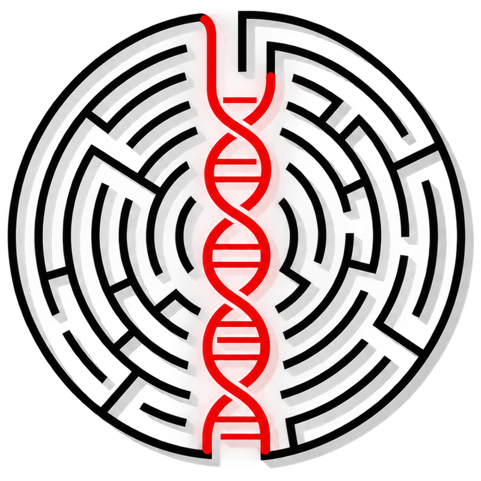

D2I 2027 · Data-to-Information Competition Series
Arianna’sThread
Make DNA similarity search compact, reliable and fast.
A competition for students, researchers and engineers, presented by the IEEE Information Theory Society’s Student & Outreach Committee. One challenge, three venues in 2027.

The task
Find the thread back to the right sequence
Given a noisy DNA fragment, retrieve its closest matches from a large reference collection.
A read and its source differ by insertions, deletions and substitutions — their edit distance. The question is how few bits per sequence are enough to still find the right match, and how fast that search can run.
The challenge
Three levels of one retrieval pipeline
Arianna’s Thread invites students, researchers and engineers to make DNA similarity search more compact, reliable and fast. The competition connects three levels.
-
Level 1
Represent and compress
Turn sequences into finite-bit codes: embeddings that approximately map edit distance into Euclidean distance, followed by source coding and quantization.
-
Level 2
Search
Search those codes with efficient data structures, returning the closest matches to a noisy query.
-
Level 3
Accelerate
Accelerate the complete retrieval pipeline on GPUs, so that it keeps up with archive-scale collections.
One task per venue. Each 2027 venue hosts one task on this shared topic. Which task runs at which venue will be announced on the venue pages.
Where information theory meets DNA search
How many bits must we retain to retrieve a sequence reliably?
DNA representation can be formulated as a rate–distortion problem, with edit distance as the measure of distortion. Participants will explore embeddings that approximately map edit distance — the insertions, deletions and substitutions separating sequences — into Euclidean distance. Source coding and quantization, with trellis-coded quantization as a baseline, then produce compact searchable codes.
This brings rate–distortion theory and coding into a task where preserving the answer can matter more than reconstructing the input. Research on compression for similarity identification provides a theoretical starting point.[3]
- FirstBits per sequence versus successful retrieval
- ThenTotal memory use and speed
- Kept apartEmbedding distortion, DNA reconstruction error and retrieval reliability are measured separately
- OptionalExact reconstruction of the sequence
Why it matters
Discoveries are already in the archives
Biological archives contain discoveries waiting to be found, but their scale makes efficient search a research problem in its own right.
2027 venues
Three venues, one thread
The topic stays the same all year. Each venue runs one task, with its own timeline, registration and Kaggle competition.
- Apr 5–8, 2027 IEEE ITW 2027Information Theory Workshop · Munich, Germany Task to be announced
- Jun 20–25, 2027 ESIT 2027European School of Information Theory · Ankara, Türkiye Task to be announced
- Jun 27 – Jul 2, 2027 IEEE ISIT 2027International Symposium on Information Theory · Sorrento, Italy Task to be announced
Get involved
Help us build Arianna’s Thread
-
Participate
Students and researchers from information theory, machine learning, bioinformatics and systems are warmly invited. Registration details will appear on each venue page.
-
Volunteer
Help with baselines, evaluation and mentoring.
-
Sponsor
Contribute prizes, compute access, student support or technical mentors, and meet participants and recruit talent.
Organizers · IEEE Information Theory Society, Student & Outreach Committee
- Khac-Hoang Ngokhac-hoang.ngo@liu.se
- Alejandro Lancho Serranoalancho@ing.uc3m.es
- Stefano Rinirini.stefano@gmail.com
Selected references
- Karasikov et al. Efficient and accurate search in petabase-scale sequence repositories. Nature (2025).
- Edgar et al. Petabase-scale sequence alignment catalyses viral discovery. Nature (2022).
- Ingber & Weissman. The minimal compression rate for similarity identification. arXiv:1312.2063 (2013).